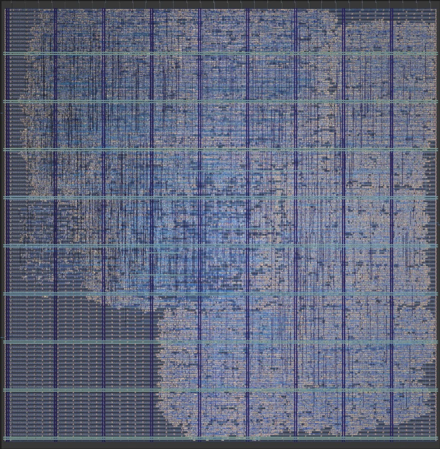

Computer Engineering, Purdue University ’28 · GPA 3.93 / 4.0
I’m a sophomore at Purdue interested in pursuing a B.S. in Computer Engineering with a concentration in Semiconductor and Microcontrollers.
Specifically, I love working with Computer Architecture and AI/ML systems. Most of my current work has been on understanding (and exploiting) processors, from desiging a RV32I CPU from scratch, modifying and microbenchmarking a GPU simulator, to developing an algorithm for allocating KV-cache for processing-in-memory (PIM) in HBM.

I was born and raised in Vietnam, then moved to the US for college. I picked Purdue because it’s a great engineering school, not because I had any clue what I wanted to do (lol). No regrets though.
Before my college application, everyone around me kept saying “get into semiconductors,” and I nodded along without really knowing what that meant. So freshman year I tried a bit of everything: Microcontrollers, embedded programming, PCB design, RFIC, analog, Formula SAE racing,...
Over winter break I installed XSchem (after watching countless videos on chip design), fought with it for a week, and decided analog wasn’t for me (my Mac refusing to run it smoothly did not help). I picked up Harris & Harris DDCA: RISC-V Edition (not sponsored) instead and got hooked on digital design and computer architecture.
The rest is history.